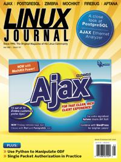

Shutdown Archive web server
Search:
Linux Journal
Issue #157/May 2007

Features
Ajax Simplified
by Nicholas Petreley
Ajax doesn't have to be intimidating
Writing Web Applications with Web Services and Ajax
by Mike Diehl
How about a slightly more advanced Ajax primer?
MochiKit by Example
by Ryan Wilcox
Get up to speed without losing control.
Four Cool Plugins for WordPress
by Marco Fioretti
Spruce up your WordPress-based site with these four plugins.
Indepth
An Ajax-Enhanced Web-Based Ethernet Analyzer
by Paul Barry
Ruby + Ajax + bash + CGI = Ethernet Analyzer?
Protecting SSH Servers with Single Packet Authorization
by Michael Rash
Security does not live on SSH alone.
OpenOffice.org ODF, Python and XML
by Collin Park
Messing with the internals of ODF
Columns
Reuven Lerner's At the Forge
Firebug
Marcel Gagné's Cooking with Linux
When Ajax Held the World on His Shoulders
Dave Taylor's Work the Shell
Displaying Image Directories in Apache, Part II
Jon "maddog" Hall's Beachhead
What Is the Value of Software?
Doc Searls' Linux for Suits
Penguins in Winnipeg
Nicholas Petreley's /var/opinion
They're Ba-ack
Quick Takes
Zimbra Collaboration Suite, Version 4.5
by Marcel Gagné
The Aptana IDE for Ajax Development
by Ben Martin
Open-Source databases, Part II: PostgreSQL
by Reuven M. Lerner
In Every Issue
Letters
upFRONT
Tech Tips
New Products
Archive Index
Shutdown Archive web server
Search:
Copyright © 1994 - 2018
Linux Journal
. All rights reserved.